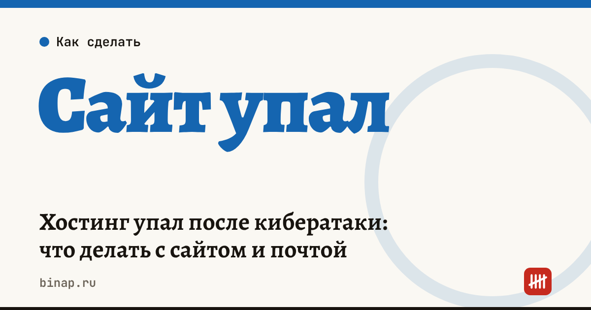

Хостинг упал после кибератаки: что делать с сайтом и почтой

Если ваш сайт или почта размещены у Beget, они могли быть недоступны со 2 ноября 2026 года: по данным «Ведомостей» и Клерка, хостинг пережил масштабную кибератаку, а полное восстановление, по словам компании, займёт много времени. Разбираем, что известно и что сделать, чтобы не терять клиентов — сейчас и в следующий раз.
Коротко
- В ночь на 2 ноября 2026 года Beget подвергся кибератаке. Затронуты виртуальный хостинг, облако, DNS и почта.
- Резервные копии, по словам компании, есть для «подавляющего большинства» ресурсов, но точных сроков восстановления не названо.
- Beget уведомил клиентов, что считает ситуацию обстоятельством непреодолимой силы. Как это сочетается с вашим договором, решает договор, а не заявление компании.
- Первое, что нужно сделать, — предупредить клиентов через другой канал: мессенджер, соцсети, запасной телефон.
- На будущее: своя копия сайта вне хостинга и запасной канал связи с клиентами.
Сроки, изменения и разборы для ИП и самозанятых — каждое утро в Telegram и MAX. Подпишитесь, чтобы не пропустить.
Что сделать сейчас
- Предупредите клиентов. Пост в канале или соцсетях, сообщение постоянным клиентам: где принять заказ, какой телефон и почта работают.
- Запасная почта. Временно укажите другой адрес в подписи и в объявлениях на картах и площадках.
- Проверьте списания. Если подписки или оплата привязаны к сайту, сверьте платежи: по данным «Ведомостей», один из пострадавших сервисов просил клиентов обратиться за перерасчётом.
- Посчитайте убытки. Это пригодится, если будете требовать перерасчёт.
- Сохраните переписку с поддержкой и перечитайте в договоре раздел об ответственности и форс-мажоре.
Сколько стоит простой: расчёт
Расчёт редакции, цифры условные: упущенная выручка за день = заказов в день × средний чек × доля заказов с сайта.
| Заказов в день | Средний чек | Доля сайта | Упущено за день |
|---|---|---|---|
| 10 | 3 000 ₽ | 50% | 15 000 ₽ |
| 30 | 1 500 ₽ | 70% | 31 500 ₽ |
Это выручка, а не прибыль: для претензии к хостингу считайте по договору, а для себя — по маржинальному доходу с упущенных заказов.
Как подстраховаться на будущее
- Своя резервная копия. Раз в неделю скачивайте файлы сайта и базу и храните отдельно от хостинга — в облаке или на диске.
- Домен и DNS — не у того же хостинга, где сайт. Тогда при сбое хостинга можно быстро направить домен на запасную копию.
- Запасной канал связи с клиентами. Канал в мессенджере или группа в соцсети, о которых знают покупатели. Заказы не должны зависеть только от формы на сайте.
- Запасная почта для важных уведомлений от банка, налоговой и площадок.
- Проверка после восстановления: работают ли формы заявок, оплата, счётчики посещаемости. Типичные проблемы — в статье Метрика и Вебмастер не работают: что делать.
Каждый час без ответа клиенту — потерянные заказы. Почему, — в колонке клиентов теряют на первом ответе.
Частые вопросы
Хостинг обязан вернуть деньги за простой? Это определяют договор и тариф. Beget заявил о форс-мажоре. Обратитесь в поддержку и сохраните переписку.
Сколько продлится восстановление? Точных сроков компания не назвала.
Как не зависеть от одного хостинга? Храните свою копию сайта вне хостинга, держите домен у другого регистратора и заведите запасной канал связи с клиентами.